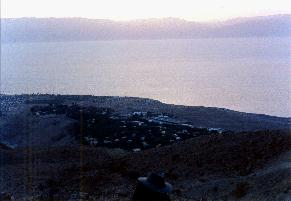
sunrise over Moab
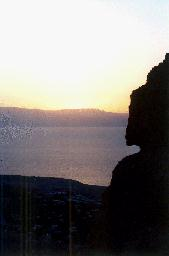 half way up
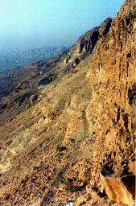 a view to the south
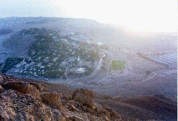 almost there
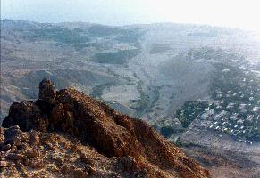 the top
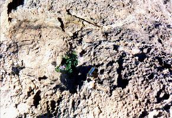 a desert flower
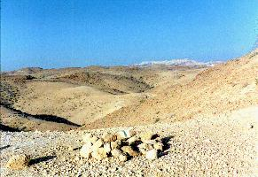 Mountains of the Moon
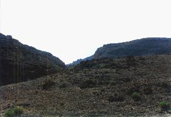 The Dead Sea
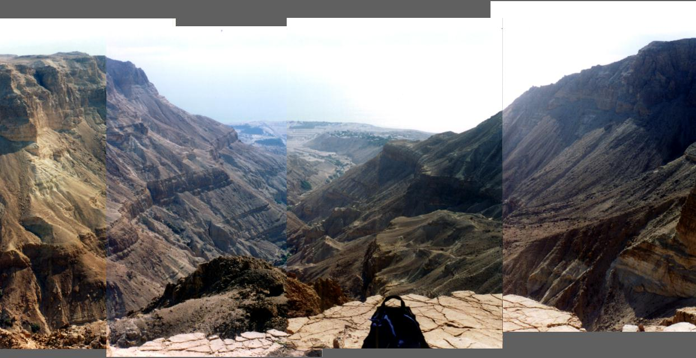 a composite view from Mt. Avishai
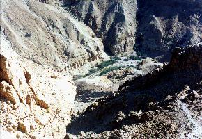 heading down again
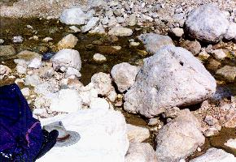 the water
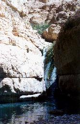 a waterfall
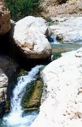 another waterfall
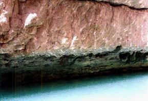 water and stone
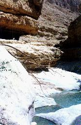 a secret stream
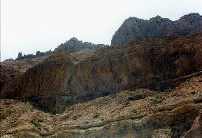 looking up
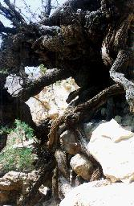
an old tamarisk tree